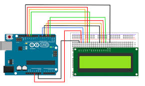

Learn how to display long messages on a small screen! This project teaches you how to scroll text across the LCD, creating a marquee effect similar to news tickers.
1. Concept and Description
In this project, we will explore how to manipulate the LCD cursor and display window to show text that is longer than the screen width (16 characters). We will use the built-in scrolling functions and also learn how to create a custom scrolling loop for more control.
LCD cursor control
scrollDisplayLeft() and scrollDisplayRight() functions
String manipulation for custom scrolling
Managing timing for readable text
2. Components Needed
(1) Arduino Uno (or compatible board)
(1) 16x2 LCD with I2C Backpack
(4) Jumper Wires (Female-to-male)
3. Physical Montage (Wiring Instructions)
The wiring is identical to the previous I2C LCD projects:
VCC to 5V
GND to GND
SDA to A4
SCL to A5

4. The Code (Arduino Sketch)
Copy and paste the code below into your Arduino IDE. This sketch demonstrates two ways to scroll text.
/*
* Project #32: LCD Scrolling Marquee Text
* The Arduino Student Lab
*
* Demonstrates how to scroll long text across a 16x2 LCD
*/
#include <Wire.h>
#include <LiquidCrystal_I2C.h>
// Initialize LCD (Address 0x27)
LiquidCrystal_I2C lcd(0x27, 16, 2);
void setup() {
lcd.init();
lcd.backlight();
}
void loop() {
// ==========================================// METHOD 1: Built-in Scrolling (Moves everything)// ==========================================
lcd.clear();
lcd.setCursor(0, 0);
lcd.print("Method 1: Built-in Scroll");
delay(1000);
// Scroll 13 positions to the leftfor (int positionCounter = 0; positionCounter < 13; positionCounter++) {
lcd.scrollDisplayLeft();
delay(300);
}
delay(1000);
// ==========================================// METHOD 2: Custom Loop (Smoother & Controlled)// ==========================================
lcd.clear();
String message = "This is a long message that scrolls smoothly across the screen! ";
lcd.setCursor(0, 0);
lcd.print("Method 2: Custom");
// Loop through the stringfor (int i = 0; i < message.length() - 16; i++) {
lcd.setCursor(0, 1);
// Print a substring of 16 characters
lcd.print(message.substring(i, i + 16));
delay(250);
}
delay(2000);
}
5. Explanation & Challenges
Method 1 vs Method 2: The built-in scrollDisplayLeft() moves everything on the screen, which can be disorienting if you want a static title. Method 2 uses string manipulation (substring) to update only the bottom line, keeping the top line fixed.
Challenges:
Speed Control: Add a potentiometer to control the scrolling speed in real-time.
Pause on End: Modify the code to pause when the message finishes before restarting.
Two-Line Scroll: Try scrolling different messages on both lines in opposite directions!